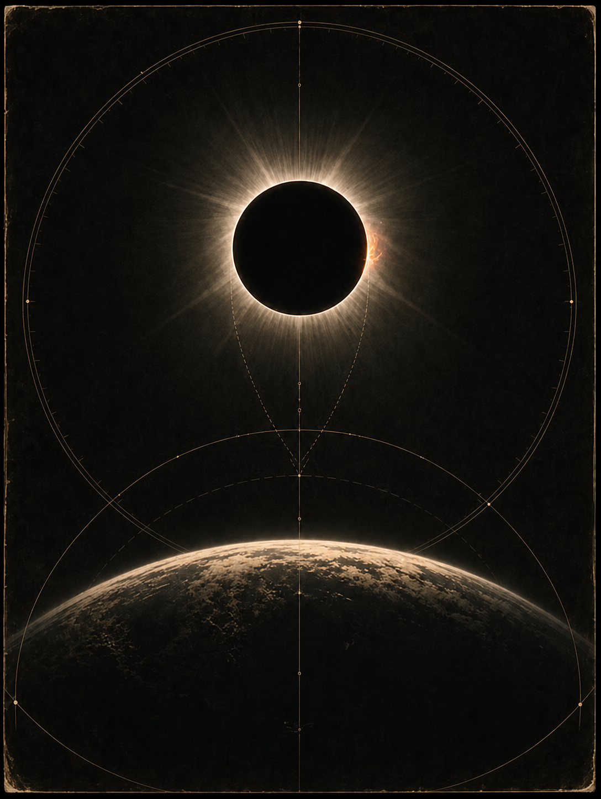
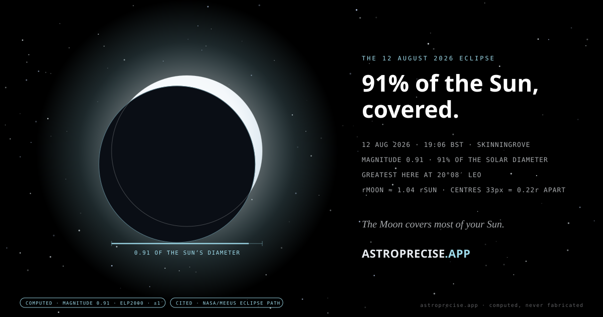

Russia to Greenland to Spain
The path crossed northern Russia, Greenland, Iceland and Spain, then clipped a small part of northeastern Portugal. Elsewhere across much of the Northern Hemisphere the eclipse was partial.
NASA path and overviewEclipse archive · 12 August 2026
The 12 August 2026 total solar eclipse has passed. The 3D instrument below defaults to greatest eclipse; Live now is the sky clock, not a claim that the eclipse is still happening. Cast your chart contact and, if it was a hard hit, keep the £7 five-beat reading and natal-wheel plate.
Greatest eclipse · 12 August 2026
Greatest eclipse was 17:45:51 UTC on 12 August 2026. Replay the 3D shadow below.
Global greatest17:45:51 UTC · 18:45:51 BST
London partial view18:17 start · ~19:13 maximum · 20:06 end
Eye safetyCertified eclipse viewers throughout every partial phase — still the rule for any future eclipse
Computing eclipse longitudeChoose Maximum, press Play shadow, then switch System / Shadow / Earth to understand the same alignment from three viewpoints.
Archive guide · 12 August 2026

Free · eight-page field editionKeep the field notes.London clock · eye safety · western horizon · observation pages · 5.1 MB PDF Download the guideThe path crossed northern Russia, Greenland, Iceland and Spain, then clipped a small part of northeastern Portugal. Elsewhere across much of the Northern Hemisphere the eclipse was partial.
NASA path and overviewLondon ran 18:17 · about 19:13 · 20:06 BST for first contact, maximum and end. Published tables round maximum by one minute. The Sun was low in the west.
Royal Observatory guideThe Royal Observatory UK stream ran 18:10–20:00 BST. NASA began at 18:15 BST; ESA joined from Spain at 18:30 BST. The Perseids peaked overnight on 12–13 August under the eclipse’s new Moon.
Use genuine ISO 12312-2 eclipse viewers or indirect projection. Phone cameras also need a solar filter over the lens; cameras, binoculars and telescopes need one secured over the front—not at the eyepiece. This remains the rule for every future eclipse.
What the sky does next
Dates hand-checked against published tables (July 2026). The 3D instrument above replays 12 August 2026; the living event ledger tracks what follows.
The Full Moon clips Earth’s shadow, visible wherever the Moon is above the horizon that night. Safe to watch with the naked eye. No second paid edition is being sold.
Event briefing Upcoming eclipsesNew Moon in Aquarius leaves a ring of Sun. The annular path crosses the southern Pacific, parts of South America and the Atlantic. Listed only — no second 3D instrument here.
Upcoming eclipsesNew Moon in Leo — one of the century’s longer totalities, tracking from the Strait of Gibraltar across North Africa and the Arabian Peninsula. Listed only.
Upcoming eclipsesYour chart · computed here
Use a chart already cast in AstroPrecise, or enter a birth moment below. Manual entry compares date/time-based planetary contacts; a saved full chart is required for Ascendant and career-angle contacts. Unknown birth times withhold the Moon and angles instead of guessing. If it was a tight conjunction, opposition or square, the £7 edition is still for sale.
